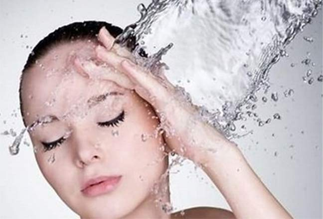

Q:为什么补水保湿对我们这样重要呢？
A：很多肌肤问题，比如出油、长皱纹等，其实都是肌肤缺水引起的。
对于油性肌肤而言，缺水、干燥就会促使皮肤自动分泌出更多的油脂来。所以，肌肤缺水也是导致肌肤过度出油的因素之一呢。
对于皱纹肌而言，肌肤的第一道细纹往往不是由岁月引起的，而是皮肤干燥引起的哦。因此，保持肌肤滋润，可以延缓第一道细纹的出现。
对于熟龄肌而言，随着年龄增长，肌肤自身的透明质酸会渐渐流失，保水力渐渐下降。所以：
含水量的高低直接影响你的肌肤年龄！
随着年龄增长，天然保湿因子和皮脂分泌都会减少，肌肤的锁水能力下降，皮肤会进入干燥缺水的状态。因此，每个年龄段，任何皮肤类型都需要补水保湿哦。
如果肌肤缺水，害处可是出乎你意料之外的！
√ 角质不能正常代谢、色素堆积，皮肤暗沉粗糙
√ 缺乏健康平衡的皮脂膜保护，易于敏感
√ 容易产生细纹，肌肤加速老化
√ 营养不易吸收，再昂贵的保养品都浪费了
| |
| Tips:为身体补充水分也是非常重要的肌肤保湿方法。一般建议大家一天至少喝八杯水，但是根据个人差异，也不需要喝水喝到肚胀。为了皮肤健康，最好的喝水方法是每次少量饮水，但保持总量。喝水是由内而外的保湿方法，但肌肤吸收毕竟是有限的，由外而内的护肤保养更是不可缺的哦。 |
| |
播放视频《肌肤保湿的奥秘》
*建议在WIFI环境下观看